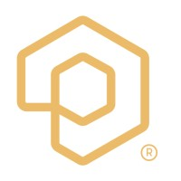
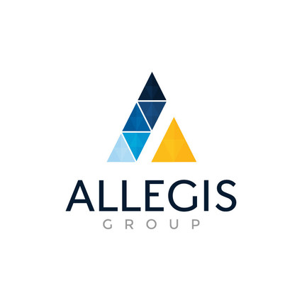
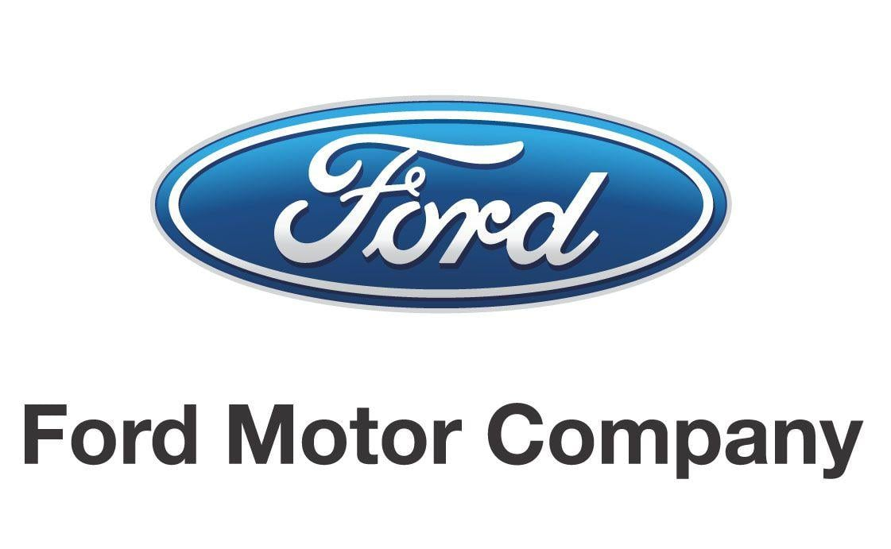
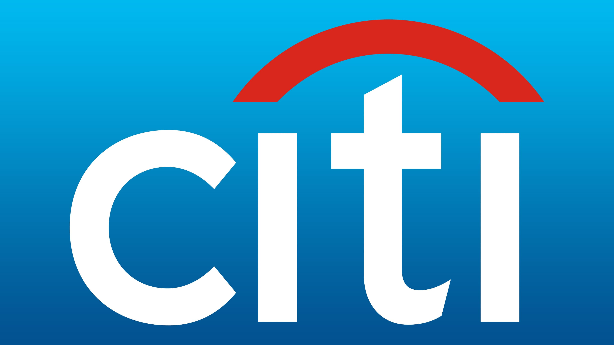
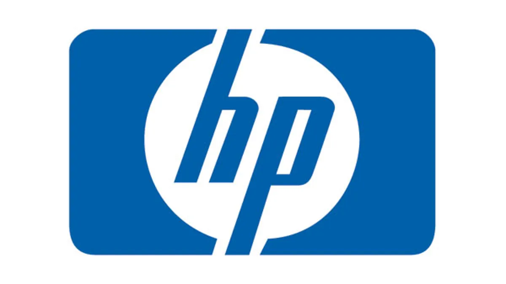
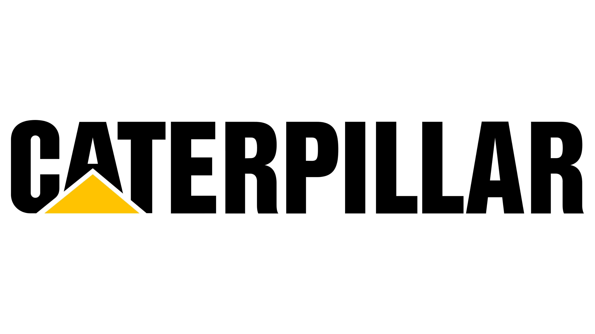
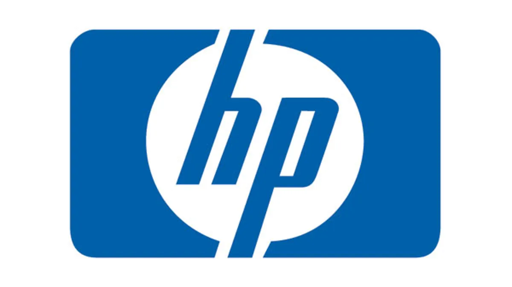
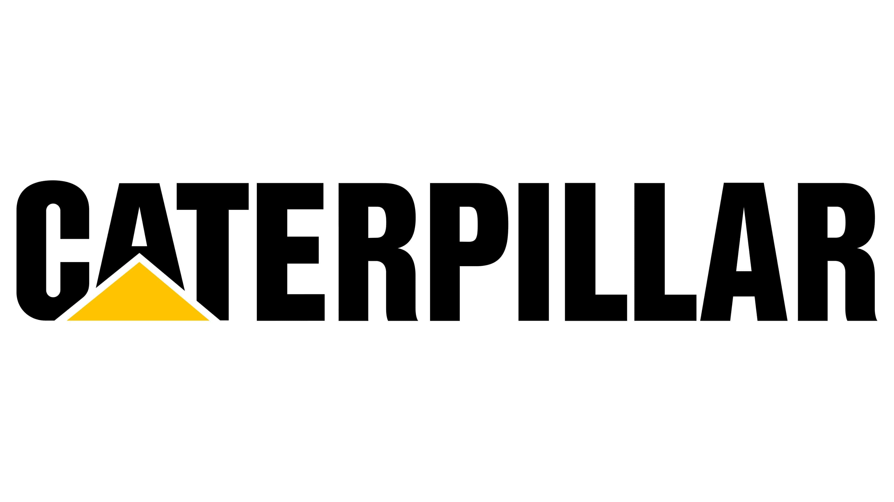
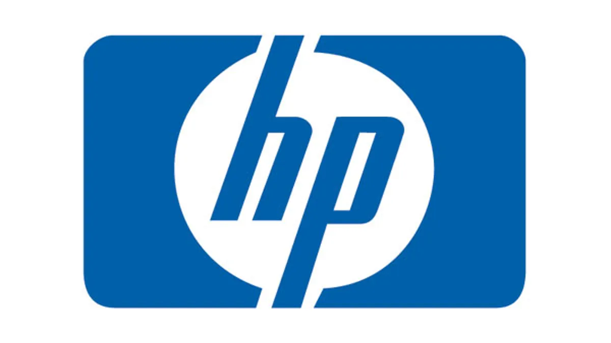
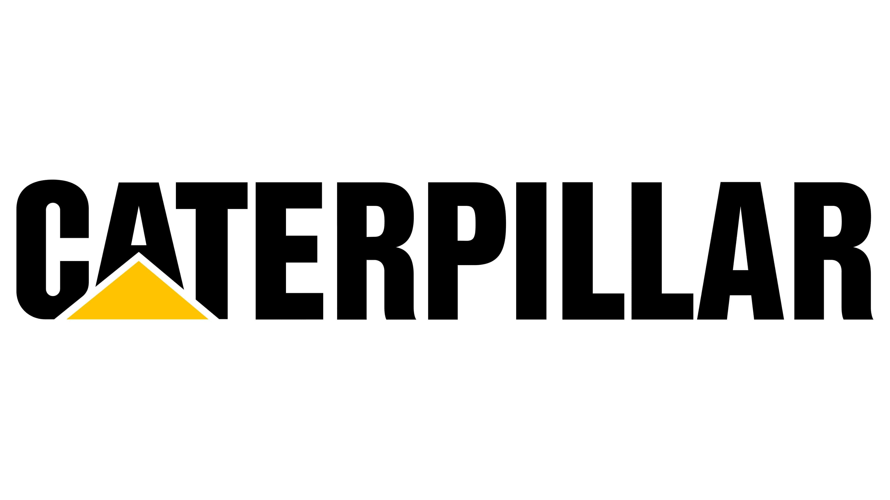

Experienced recruiter with 6+ years of end-to-end recruitment expertise in IT and Non-IT domains. Proficient in sourcing, evaluating, and hiring across sectors including BFSI, Engineering, Manufacturing, and Technology. Adept with CMS, ATS, Naukri, LinkedIn Recruiter, Workday, and AI-based sourcing tools. Skilled in managing hiring pipelines, candidate engagement, and stakeholder collaboration across delivery teams and senior leadership.
Skills
Stakeholder Management
Recruitment Strategy & Pipeline Building
Diversity Hiring & Employer Branding
Client & Candidate Relationship Management
Interviewing & Salary Negotiation
CMS & ATS Tools (Workday, Oracle HCM)
LinkedIn Recruiter, Naukri, Indeed
Jira, MS Office Suite, Google Workspace
Gen AI in Recruitment
Onboarding & Documentation
Work Experience

Photon Interactive Pvt. Ltd.
Senior Executive – Talent Acquisition | Dec 2024 – Present
Handled end-to-end recruitment for digital and niche tech roles, including Java, leadership, and data engineering positions.
Collaborated with VPs, AVPs, product owners, and delivery heads from Indian enterprise clients to understand hiring needs and project priorities.
Independently managed requisitions and supported project-based hiring drives with quick turnaround expectations.
Used market research and talent insights to create effective sourcing strategies for competitive hiring.
Utilized Oracle HCM and Jira to streamline recruitment workflows and generate insightful dashboards for stakeholders.
Led candidate experience initiatives, owning communication, interview scheduling, feedback, and offer negotiation.
Drove process improvement initiatives to reduce time-to-hire and increase hire quality.
Supported diversity hiring initiatives in alignment with company goals and inclusion policies.
Coordinated with HR operations and delivery teams to ensure smooth onboarding and compliance.
RLE India Pvt. Ltd.
Senior Executive – Talent Acquisition | Jun 2023 – Dec 2024
Led a team of four recruiters and ensured they consistently met hiring targets by providing support and performance feedback.
Acted as the single point of contact for the Ford Motors hiring project, aligning recruitment strategies with client goals.
Owned hiring for both tech and non-tech roles, delivering high-quality candidates for critical business needs.
Implemented AI-based screening tools that halved the initial screening time and improved focus on top talent.
Increased candidate engagement by 60% through structured follow-ups, weekly goals, and collaborative strategies.
Oversaw sourcing strategies across Naukri, LinkedIn, and internal referrals for both bulk and niche hiring.
Streamlined interview coordination and feedback cycles between internal and client-side teams.
Mentored junior recruiters on best practices in sourcing, evaluation, and offer handling.
Managed vendor relationships and ensured timely submissions for high-volume hiring needs.
Analyzed recruitment data to identify bottlenecks and implemented process enhancements.
Ensured alignment with diversity hiring targets and facilitated ramp-up drives.

Allegis Group
Senior Recruiter | Jul 2019 – Jun 2023
Managed end-to-end recruitment within the MSP model, partnering with account managers to meet service-level expectations.
Aligned hiring strategies with business needs by understanding client goals and key talent requirements.
Built strong relationships with hiring stakeholders to ensure smooth communication and timely decisions.
Sourced candidates from job portals, referrals, and internal databases, maintaining a robust talent pipeline.
Conducted phone and virtual interviews to evaluate candidates’ skills and cultural fit.
Used HackerRank and internal technical panels for technical assessments.
Managed scheduling, interview coordination, feedback collection, and candidate communication.
Executed onboarding processes, document collection, and offer rollouts.
Maintained accurate recruitment data and submitted progress updates to leadership.
Focused on enhancing the candidate experience by ensuring transparent communication at every stage.
Key Problems Solved
Low Quality of Hires: Integrated AI screening tools for better accuracy.
Niche Talent Gap: Closed roles in Java Full Stack, DevOps, and Data Engineering.
Unstructured Hiring: Introduced structured interview coordination and dashboards.
Brand Image: Improved candidate experience across all hiring stages.
Certifications
Generative AI in Recruiting – PMI
Managing Project Stakeholders – PMI
ChatGPT for HR – Great Learning Academy
Recruitment & Selection Specialist – Udemy
SAP Business One and FICO – CAST Mangalore
Education
MBA in Human Resources Management – Mangalore University, 2019
Bachelor of Computer Science – Gulbarga University, 2017
Clients Supported




(Logos should be placed in the root folder with matching filenames)
 


